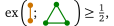
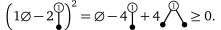
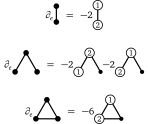

Flag Sums of Squares for Sidorenko's Conjecture
Daniel Brosch
University of Klagenfurt
June 2, 2023
Extremal graph theory
We are interested in limit objects of sequences of graphs $$ \mathcal{G} = (G_i)_{i\geq 0},$$ where $G_i$ is a graph on $i$ vertices.How many edges can there be in a triangle free graph?
Graphons (Graph-functions)
[Lovász, Szegedy, 2006]


Flag Algebras
[Razborov, 2007]

Subgraph densities
We define the (non-induced) density of a finite graph $\color{darkorange}H$ in $\mathcal{G}$ as $$\phi_{\mathcal{G}}({\color{darkorange}H}):= \lim_{i\to\infty} \text{density of $\color{darkorange}H$ in $G_i$}$$$$=\lim_{i\to\infty} \mathbb{P}[{\color{green}\sigma_i}({\color{darkorange}H}) \text{ is a subgraph of }G_i ],$$ where ${\color{green}\sigma_i}\colon V({\color{darkorange}H})\to V(G_i)$ is a random injective mapping.
Triangle free graphs
Maximize the edge density in a triangle free sequence $\mathcal{G}$ of graphs of increasing size:
We saw that
but how can we prove an upper bound?
Multiplying subgraph densities
To multiply two subgraph densities, we glue together the graphs:
These relationships are independent of $\mathcal{G}$, motivating the definition
where a graph $H$ now stands for the function $$\small H(\mathcal{G}) = \phi_{\mathcal{G}}(H)= \lim_{i\to\infty} \mathbb{P}[\sigma_i(H) \text{ is a subgraph of }G_i].$$
We can fix entries of the $\sigma_i$ to fix (flag) some vertices, and extend the gluing operation to partially labeled graphs (flags):
Flag Sums-of-Squares
- Flags $F$ send graph sequences to real numbers: $$ F (\mathcal{G}) \in [0,1]$$
-
Then so do real linear combinations of flags
The literature calls these "Quantum graphs". -
Squares of real numbers are nonnegative:

We can average flags over all choices of labels, unlabeling them:
We can now find an upper bound for the edge density in triangle free graphs:
As with polynomial optimization, we can model Flag-SOS using semidefinite programming.
Graph profiles
We saw that triangle free graphs have at most edge density $\frac{1}{2}$.
What happens if we allow some triangles?

Investigating nonnegativity
Let $p=a_1 G_1 + a_2 G_2 + \ldots + a_k G_k$ be a linear combination of unlabeled graphs.[Lovász, Szegedy 2009]:
If $p\geq 0$, then $p + \varepsilon$ is a SOS for any $\varepsilon > 0$.
[Hatami, Norin, 2011]:
The question "Does $p \geq 0$ hold?"
is undecidable.
Sidorenko's Conjecture
For fixed edge density $\rho$, the Erdős–Rényi random graph $\mathrm{ER}(\rho, n)$ minimizes the density of every bipartite graph as $n\to\infty$.
For every bipartite graph $H$,
Progress on Sidorenko's Conjecture
- [Mulholland, Smith 1959]: paths
Progress on Sidorenko's Conjecture
- [Mulholland, Smith 1959]: paths
- [Sidorenko 1991]: trees, even cycles, $K_{n,m}$, bipartite graphs with at most $4$ vertices on one side
Progress on Sidorenko's Conjecture
- [Mulholland, Smith 1959]: paths
- [Sidorenko 1991]: trees, even cycles, $K_{n,m}$, bipartite graphs with at most $4$ vertices on one side
- [Hitomi 2008]: Hypercube graphs, norming graphs
Progress on Sidorenko's Conjecture
- [Sidorenko 1991]: trees, even cycles, $K_{n,m}$, bipartite graphs with at most $4$ vertices on one side
- [Hitomi 2008]: Hypercube graphs, norming graphs
-
[Conlon, Fox, Sudakov 2010]:
If one vertex connects to all vertices on the other side
Progress on Sidorenko's Conjecture
- [Hitomi 2008]: Hypercube graphs, norming graphs
-
[Conlon, Fox, Sudakov 2010]:
If one vertex connects to all vertices on the other side -
[Sidorenko 1991], [Li, Szegedy 2011], [Kim, Lee, Lee 2013]:
Various recursive constructions
Progress on Sidorenko's Conjecture
-
[Conlon, Fox, Sudakov 2010]:
If one vertex connects to all vertices on the other side -
[Sidorenko 1991], [Li, Szegedy 2011], [Kim, Lee, Lee 2013]:
Various recursive constructions - [Conlon, Lee 2018]: For every bipartite graph $H$ exists a $p$ such that the $p$-blow up of $H$ is Sidorenko.
Progress on Sidorenko's Conjecture
-
[Sidorenko 1991], [Li, Szegedy 2011], [Kim, Lee, Lee 2013]:
Various recursive constructions - [Conlon, Lee 2018]: For every bipartite graph $H$ exists a $p$ such that the $p$-blow up of $H$ is Sidorenko.
-
[Blekherman, Raymond, Singh, Thomas 2018]:
$P_3-e^3$ is not (rational) flag-SOS. The smallest open case $K_{5,5}\setminus C_{10}-e^{15}$ is not not (rational) flag-SOS.
Progress on Sidorenko's Conjecture
-
[Blekherman, Raymond, Singh, Thomas 2018]:
$P_3-e^3$ is not (rational) flag-SOS. The smallest open case $K_{5,5}\setminus C_{10}-e^{15}$ is not not (rational) flag-SOS. - [Garg, Raymond, Redlich 2022]: Many cases of Sidorenko's Conjecture cannot be shown using flag-SOS. Most known cases can potentially be recovered using flag-SOS.
Interest for alternative proofs of $P_3-e^3\geq 0$!
The space of graph limits
- Linear combinations of subgraph densities are continuous functions in this space.
- How can we move in the space without leaving it?
- Can we define directional derivatives of flags?
Derivatives of flags
[Razborov, 2007] introduces two derivatives:
- In direction of deleting a vertex $v$.
- In direction of deleting an edge $e$.
Lovász translates the definition to graphons.
Diao, Guillot, Khare, Bajaratnam consider Gateaux derivatives in the space of graphons.
$\partial_v$: Deleting the vertex ${\color{orange}v}$
$\partial_v$: Deleting the vertex ${\color{orange}v}$
$\partial_v$: Deleting the vertex ${\color{orange}v}$
$\partial_e$: Deleting the edge ${\color{orange}e}$
$\partial_e$: Deleting the edge ${\color{orange}e}$
Using the derivatives in optimization
Let ${\color{orange}f}$ be a linear combination of subgraph densities, with minimizer $\mathcal{G}$ .
- Then $\partial_{\color{red}v} {\color{orange}f}(\mathcal{G}) = 0$ for nearly all vertices ${\color{red}v}$.
- Then $\partial_{\color{red}e} {\color{orange}f}(\mathcal{G}) \geq 0$ for nearly all edges ${\color{red}e}$.
We can add additional constraints to optimization problems!
Using the derivatives in optimization
$$ \begin{align} \min_{\mathcal{G}}\enspace& {\color{orange}f}(\mathcal{G}) &= \min_{\mathcal{G}}\enspace& {\color{orange}f}(\mathcal{G})\\ &&\text{s.t. }& \mathbb{P}[\partial_{\color{red}v} {\color{orange}f}(\mathcal{G}) = 0]=1, \\ &&& \mathbb{P}[\partial_{\color{red}e} {\color{orange}f}(\mathcal{G}) \geq 0]=1. \end{align} $$We can find better SOS certificates in the quadratic module given by these constraints.
Proof idea
- Assume there is an $\varepsilon$-subset of vertices/edges that violates the constraints.
- Show that there exists a subset of $\Theta(n)$ vertices resp. $\Theta(n^2)$ edges we can remove consecutively to shift the objective.
Problem: We have to pick the elements "independently enough".
Main contribution
We show that the proofs generalize to more complicated actions on three or more vertices.
Main observation: We only ever need to apply the operation $\Theta(n^2)$ times! We can construct bigger "independent" sets probabilistically.
Hinge-switch derivative
We define the derivative $\partial_{\text{hinge}}$ based on the operation on vertices $i,j,k$, which swaps the edges $\{i,j\}$ and $\{i,k\}$.Edge-swap derivative
We define the derivative $\partial_{\text{swap}}$ based on the operation on vertices $i,j,k, l$, which swaps the edges $\{i,j\}$ and $\{k,l\}$.And many more complicated ones!
SOS based proof for small cases of Sidorenko's
We found an exact (and easily human checkable) flag-SOS certificate for \begin{align} 0 = \min\enspace& P_3 - e^3\\ \text{s.t. }& \mathbb{P}[\partial_{\text{swap}}(P_3 - e^3) \geq 0 ]=1 \end{align}And numeric certificates for the two next biggest cases with no "pure" flag-SOS based proof.